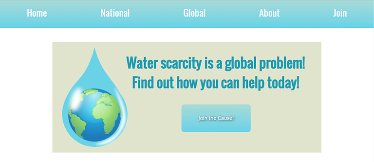

About Me
Who am I?
I am a Front-end Developer located in the central Florida area after just completing my Bachelor of Arts degree in Digital Arts from Stetson University. I have a passion for improving my skills in both design and development, and love finding unique and creative ways to use code to create a beautiful user experience. In my spare time, I enjoy reading a good book, playing video games, playing my bass guitar, and learning as much as I can about web development.
What do I do?
My primary interest is in Front-end development. I am well-verses in HTML, CSS(SCSS), Javascript, jQuery, and php. I have also dabbled in writing svg. I am constantly looking for inspiration for good websites and user experiences. I spend most of my idle time on CodePen playing with code or looking for new ideas to improve my own design skills. As well as web design, I also enjoy using programming for the creation of art to creative generative or interactive works that can be different every time they're viewed.
My Work
Web Design and Development
Water Scarcity Awareness Website
This project was my first attempt at a complete website with advanced features without the use of any external frameworks. Also, served as a way to put new web design techniques, such as flexbox layout, to the test. This site was made to interact with a physical installation that served to illustrate the problem.